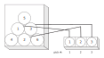
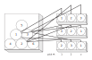
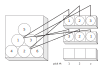
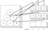
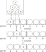
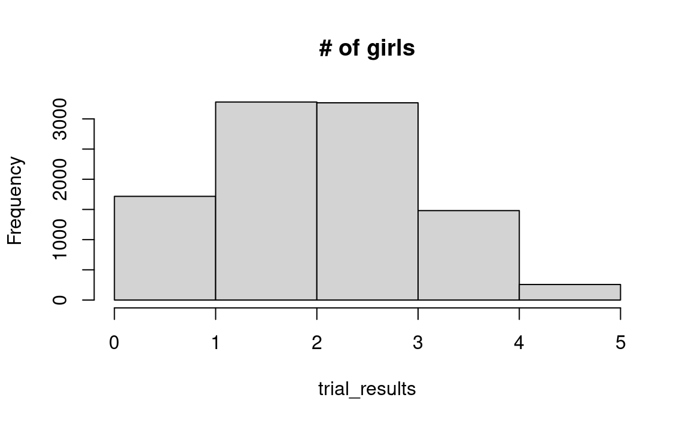
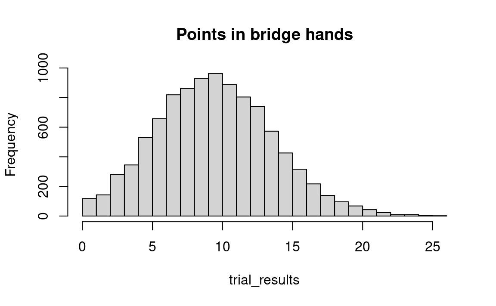
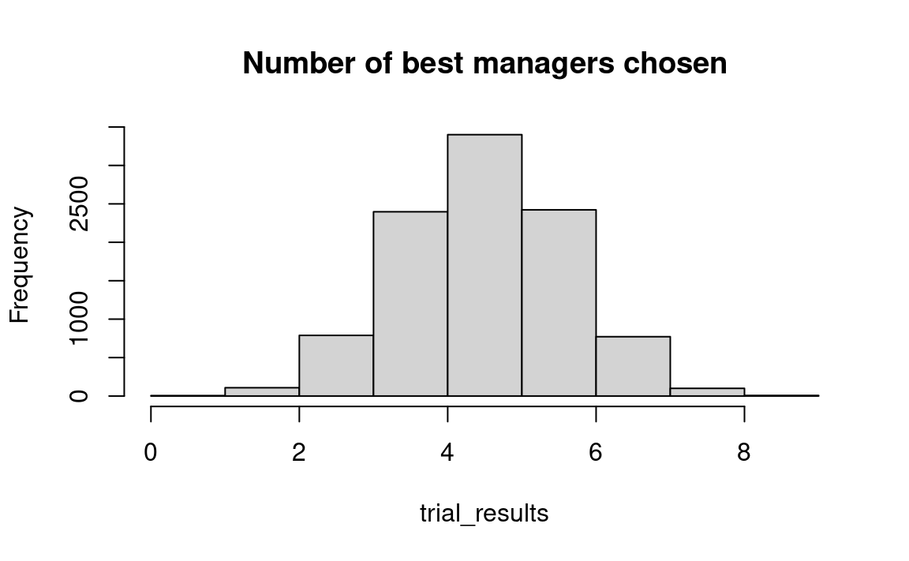

13 Probability Theory, Part 4: Estimating Probabilities from Finite Universes
13.1 Introduction
The examples in Chapter 12 dealt with infinite universes , in which the probability of a given simple event is unaffected by the outcome of the previous simple event. But now we move on to finite universes, situations in which you begin with a given set of objects whose number is not enormous — say, a total of two, or two hundred, or two thousand. If we liken such a situation to a bucket containing balls of different colors each with a number on it, we are interested in the probability of drawing various sets of numbered and colored balls from the bucket on the condition that we do not replace balls after they are drawn.
In the cases addressed in this chapter, it is important to remember that the single events no longer are independent of each other. A typical situation in which sampling without replacement occurs is when items are chosen from a finite universe — for example, when children are selected randomly from a classroom. If the class has five boys and five girls, and if you were to choose three girls in a row, then the chance of selecting a fourth girl on the next choice obviously is lower than the chance that you would pick a girl on the first selection.
The key to dealing with this type of problem is the same as with earlier problems: You must choose a simulation procedure that produces simple events having the same probabilities as the simple events in the actual problem involving sampling without replacement. That is, you must make sure that your simulation does not allow duplication of events that have already occurred. The easiest way to sample without replacement with resampling techniques is by simply ignoring an outcome if it has already occurred.
Examples Section 13.3.1 through Section 13.3.10 deal with some of the more important sorts of questions one may ask about drawings without replacement from such an urn. To get an overview, I suggest that you read over the summaries (in bold) introducing examples Section 13.3.1 to Section 13.3.10 before beginning to work through the examples themselves.
This chapter also revisits the general procedure used in solving problems in probability and statistics with simulation, here in connection with problems involving a finite universe. The steps that one follows in simulating the behavior of a universe of interest are set down in such fashion that one may, by random drawings, deduce the probability of various events. Having had by now the experience of working through the problems in Chapter 9 and Chapter 12, the reader should have a solid basis to follow the description of the general procedure which then helps in dealing with specific problems.
Let us begin by describing some of the major sorts of problems with the aid of a bucket with six balls.
13.2 Some building-block programs
Case 1. Each of six balls is labeled with a number between “1” and “6.” We ask: What is the probability of choosing balls 1, 2, and 3 in that order if we choose three balls without replacement? Figure 13.1 diagrams the events we consider “success.”
Case 2. We begin with the same bucket as in Case 1, but now ask the probability of choosing balls 1, 2, and 3 in any order if we choose three balls without replacement. Figure 13.2 diagrams two of the events we consider success. These possibilities include that which is shown in Figure 13.1 above, plus other possibilities.

Case 3. The odd-numbered balls “1,” “3,” and “5,” are painted red and the even-numbered balls “2,” “4,” and “6” are painted black. What is the probability of getting a red ball and then a black ball in that order? Some possibilities are illustrated in Figure 13.3, which includes the possibility shown in Figure 13.1. It also includes some but not all possibilities found in Figure 13.2; for example, Figure 13.2 includes choosing balls 2, 3 and 1 in that order, but Figure 13.3 does not.

Case 4. What is the probability of getting two red balls and one black ball in any order?

Case 5. Various questions about matching may be asked with respect to the six balls. For example, what is the probability of getting ball 1 on the first draw or ball 2 on the second draw or ball 3 on the third draw? (Figure 13.5) Or, what is the probability of getting all balls on the draws corresponding to their numbers?

13.3 Problems in finite universes
13.3.1 Example: four girls and one boy
What is the probability of selecting four girls and one boy when selecting five students from any group of twenty-five girls and twenty-five boys? This is an example of sampling without replacement when there are two outcomes and the order does not matter.
The important difference between this example and the infinite-universe examples in the prior chapter is that the probability of obtaining a boy or a girl in a single simple event differs from one event to the next in this example, whereas it stays the same when the sampling is with replacement. To illustrate, the probability of a girl is .5 (25 out of 50) when the first student is chosen, but the probability of a girl is either 25/49 or 24/49 when the second student is chosen, depending on whether a boy or a girl was chosen on the first pick. Or after, say, three girls and one boy are picked, the probability of getting a girl on the next choice is (28-3)/(50-4) = 22/46 which is clearly not equal to .5.
As always, we must create a satisfactory analog to the process whose probability we want to learn. In this case, we can use a deck of 50 cards, half red and half black, and deal out five cards without replacing them after each card is dealt; this simulates the choice of five students from among the fifty.
We can no longer use our procedure from before. If we designated “1-25” as being girls and “26-50” as being boys and then proceeded to draw random numbers, the probability of a girl would be the same on each pick.
At this point, it is important to note that — for this particular problem — we do not need to distinguish between particular girls (or boys). That is, it does not matter which girl (or boy) is selected in a given trial. Nor did we pay attention to the order in which we selected girls or boys. This is an instance of Case 4 discussed above. Subsequent problems will deal with situations where the order of selection, and the particular individuals, do matter.
Our approach then is to mimic having the class in front of us: an array of 50 strings, half of the entries ‘boy’ and the other half ‘girl’. We then shuffle the class (the array), and choose the first N students (strings).
- Step 1. Create a list with 50 labels, half ‘boy’ and half ‘girl’.
- Step 2. Shuffle the class and select five students. Count whether there are four labels equal ‘girl’. If so, write “yes,” otherwise “no”.
- Step 3. Repeat step 2, say, 10,000 times, and count the proportion “yes”, which estimates the probability sought.
The results of a few experimental trials are shown in Table 13.1.
| Experiment | Strings Chosen | Success? |
|
‘girl’, ‘boy’, ‘boy’, ‘girl’, ‘boy’ | No |
|
‘boy’, ‘girl’, ‘girl’, ‘girl’, ‘girl’ | Yes |
|
‘girl, ’girl’, ‘girl’, ‘boy’, ‘girl’ | Yes |
A solution to this problem with R is presented below.
Start of four_girls_one_boy notebook
N <- 10000
trial_results <- numeric(N)
# Constitute the set of 25 girls and 25 boys.
whole_class <- rep(c('girl', 'boy'), c(25, 25))
# Repeat the following steps N times.
for (i in 1:N) {
# Shuffle the numbers
shuffled <- sample(whole_class)
# Take the first 5 numbers, call them c.
c <- shuffled[1:5]
# Count how many girls there are, put the result in d.
d <- sum(c == 'girl')
# Keep track of each trial result in z.
trial_results[i] <- d
# End the experiment, go back and repeat until all 1000 trials are
# complete.
}
# Count the number of times we got four girls, put the result in k.
k <- sum(trial_results == 4)
# Convert to a proportion.
kk <- k / N
# Print the result.
message(kk)0.1481We can also find the probabilities of other outcomes from a histogram of trial results obtained with the following command:
# Do histogram, with one bin for each possible number.
hist(trial_results, breaks=0:max(trial_results), main='# of girls')
In the resulting histogram we can see that in 15 percent of the trials, 4 of the 5 selected were girls.
It should be noted that for this problem — as for most other problems — there are several other resampling procedures that will also do the job correctly.
In analytic probability theory this problem is worked with a formula for “combinations.”
End of four_girls_one_boy notebook
13.3.2 Example: Five spades and four clubs in a bridge hand
Start of five_spades_four_clubs notebook
This is an example of multiple-outcome sampling without replacement, order does not matter.
The problem is similar to the example in Section 13.3.1, except that now there are four equally-likely outcomes instead of only two. An R solution is:
# Constitute the deck of 52 cards.
# Repeat the suit names 13 times each, to make a 52 card deck.
deck <- rep(c('spade', 'club', 'diamond', 'heart'), c(13, 13, 13, 13))
# Show the deck
deck [1] "spade" "spade" "spade" "spade" "spade" "spade" "spade"
[8] "spade" "spade" "spade" "spade" "spade" "spade" "club"
[15] "club" "club" "club" "club" "club" "club" "club"
[22] "club" "club" "club" "club" "club" "diamond" "diamond"
[29] "diamond" "diamond" "diamond" "diamond" "diamond" "diamond" "diamond"
[36] "diamond" "diamond" "diamond" "diamond" "heart" "heart" "heart"
[43] "heart" "heart" "heart" "heart" "heart" "heart" "heart"
[50] "heart" "heart" "heart" N <- 10000
trial_results <- numeric(N)
# Repeat the trial N times.
for (i in 1:N) {
# Shuffle the deck and draw 13 cards.
hand <- sample(deck, 13) # replace=FALSE is the default.
# Count the number of spades in "hand", put the result in "n_spades".
n_spades <- sum(hand == 'spade')
# If we have five spades, we'll continue on to count the clubs. If we don't
# have five spades, the number of clubs is irrelevant — we have not gotten
# the hand we are interested in.
if (n_spades == 5) {
# Count the clubs, put the result in "n_clubs"
n_clubs <- sum(hand == 'club')
# Keep track of the number of clubs in each trial
trial_results[i] <- n_clubs
}
# End one experiment, go back and repeat until all N trials are done.
}
# Count the number of trials where we got 4 clubs. This is the answer we want -
# the number of hands out of 1000 with 5 spades and 4 clubs. (Recall that we
# only counted the clubs if the hand already had 5 spades.)
n_5_and_4 <- sum(trial_results == 4)
# Convert to a proportion.
prop_5_and_4 <- n_5_and_4 / N
# Print the result
message(prop_5_and_4)0.022End of five_spades_four_clubs notebook
13.3.3 Example: a total of fifteen points in a bridge hand
Start of fifteen_points_in_bridge notebook
Let us assume that ace counts as 4, king = 3, queen = 2, and jack = 1.
# Constitute a deck with 4 jacks (point value 1), 4 queens (value 2), 4
# kings (value 3), 4 aces (value 4), and 36 other cards with no point
# value
whole_deck <- rep(c(1, 2, 3, 4, 0), c(4, 4, 4, 4, 36))
whole_deck [1] 1 1 1 1 2 2 2 2 3 3 3 3 4 4 4 4 0 0 0 0 0 0 0 0 0 0 0 0 0 0 0 0 0 0 0 0 0 0
[39] 0 0 0 0 0 0 0 0 0 0 0 0 0 0N <- 10000
trial_results <- numeric(N)
# Do N trials.
for (i in 1:N) {
# Shuffle the deck of cards and draw 13
hand <- sample(whole_deck, size=13) # replace=FALSE is default.
# Total the points.
points <- sum(hand)
# Keep score of the result.
trial_results[i] <- points
# End one experiment, go back and repeat until all N trials are done.
}# Produce a histogram of trial results.
hist(trial_results, breaks=0:max(trial_results), main='Points in bridge hands')
From this histogram, we see that in about 4 percent of our trials we obtained a total of exactly 15 points. We can also compute this directly:
# How many times did we have a hand with fifteen points?
k <- sum(trial_results == 15)
# Convert to a proportion.
kk <- k / N
# Show the result.
kk[1] 0.0426End of fifteen_points_in_bridge notebook
13.3.4 Example: Four girls then one boy from 25 girls and 25 boys
Start of four_girls_then_one_boy_25 notebook
In this problem, order matters; we are sampling without replacement, with two outcomes, several of each item.
What is the probability of getting an ordered series of four girls and then one boy , from a universe of 25 girls and 25 boys? This illustrates Case 3 above. Clearly we can use the same sampling mechanism as in the example Section 13.3.1, but now we record “yes” for a smaller number of composite events.
We record “no” even if a single one boy is chosen but he is chosen 1st, 2nd, 3rd, or 4th, whereas in Section 13.3.1, such outcomes are recorded as “yes”-es.
- Step 1. Generate a class (vector) of length 50, consisting of 25 strings valued “boy” and 25 strings valued “girl”.
- Step 2. Shuffle the class array, and select the first five elements.
- Step 3. If the first five elements are exactly
'girl', 'girl', 'girl', 'girl', 'boy', write “yes,” otherwise “no.” - Step 4. Repeat steps 2 and 3, say, 10,000 times, and count the proportion of “yes” results, which estimates the probability sought.
Let us start the single trial procedure like so:
# Constitute the set of 25 girls and 25 boys.
whole_class <- rep(c('girl', 'boy'), c(25, 25))
# Shuffle the class into a random order.
shuffled <- sample(whole_class)
# Take the first 5 class members, call them c.
c <- shuffled[1:5]
# Show the result.
c[1] "boy" "boy" "boy" "boy" "girl"Our next step (step 3) is to check whether c is exactly equal to the result of interest. The result of interest is:
# The result we are looking for - four girls and then a boy.
result_of_interest <- rep(c('girl', 'boy'), c(4, 1 ))
result_of_interest[1] "girl" "girl" "girl" "girl" "boy" We can then use a vector comparison with == to do an element by element (elementwise) check, asking whether the corresponding elements are equal:
# A Boolean array, with True where corresponding elements are equal, False
# otherwise.
are_equal <- c == result_of_interest
are_equal[1] FALSE FALSE FALSE FALSE FALSEWe are nearly finished with step 3 — it only remains to check whether all of the elements were equal, by checking whether all of the values in are_equal are TRUE.
We know that there are 5 elements, so we could check whether there are 5 TRUE values with sum:
# Are there exactly 5 TRUE values in `are_equal`?
sum(are_equal) == 5[1] FALSEAnother way to ask the same question is by using the all function on are_equal. This returns TRUE if all the elements in are_equal are TRUE, and FALSE otherwise.
Testing whether all elements of a vector are the same
The all, applied to a Boolean vector (as here), checks whether all of the elements in the Boolean vector are TRUE. If so, it returns TRUE, otherwise, it returns FALSE.
For example:
# All elements are TRUE, `all` returns TRUE
all(c(TRUE, TRUE, TRUE, TRUE))[1] TRUE# At least one element is FALSE, `all` returns FALSE
all(c(TRUE, TRUE, FALSE, TRUE))[1] FALSEHere is the full procedure for steps 2 and 3 (a single trial):
# Shuffle the class into a random order.
shuffled <- sample(whole_class)
# Take the first 5 class members, call them c.
c <- shuffled[1:5]
# For each element, test whether the result is the result of interest.
are_equal <- c == result_of_interest
# Check whether we have the result we are looking for.
is_four_girls_then_one_boy <- all(are_equal)All that remains is to put the single trial procedure into a loop.
N <- 10000
trial_results <- numeric(N)
# Repeat the following steps 1000 times.
for (i in 1:N) {
# Shuffle the class into a random order.
shuffled <- sample(whole_class)
# Take the first 5 class members, call them c.
c <- shuffled[1:5]
# For each element, test whether the result is the result of interest.
are_equal <- c == result_of_interest
# Check whether we have the result we are looking for.
is_four_girls_then_one_boy <- all(are_equal)
# Store the result of this trial.
trial_results[i] <- is_four_girls_then_one_boy
# End the experiment, go back and repeat until all N trials are
# complete.
}
# Count the number of times we got four girls then a boy
k <- sum(trial_results)
# Convert to a proportion.
kk <- k / N
# Print the result.
message(kk)0.0311This type of problem is conventionally done with a permutation formula.
End of four_girls_then_one_boy_25 notebook
13.3.5 Example: repeat pairings from random pairing
Start of university_icebreaker notebook
First put two groups of 10 people into 10 pairs. Then re-randomize the pairings. What is the chance that four or more pairs are the same in the second random pairing? This is a problem in the probability of matching by chance.
Ten representatives each from two universities, Birmingham and Berkeley, attend a meeting. As a social icebreaker, representatives are divided, randomly, into pairs consisting of one person from each university.
If they held a second round of the icebreaker, with a new random pairing, what is the chance that four or more pairs will be the same?
In approaching this problem, we start at the point where the first icebreaker is complete. We now have to determine what happens after the second round.
- Step 1. Let “ace” through “10” of hearts represent the ten representatives from Birmingham University. Let “ace” through “10” of spades be their allocated partners (in round one) from Berkeley.
- Step 2. Shuffle the hearts and deal them out in a row; shuffle the spades and deal in a row just below the hearts.
- Step 3. Count the pairs — a pair is one card from the heart row and one card from the spade row — that contain the same denomination. If 4 or more pairs match, record “yes,” otherwise “no.”
- Step 4. Repeat steps (2) and (3), say, 10,000 times.
- Step 5. Count the proportion “yes.” This estimates the probability of 4 or more pairs.
Exercise for the student: Write the steps to do this example with random numbers. The R solution follows below.
N <- 10000
trial_results <- numeric(N)
# Assign numbers to each student, according to their pair, after the first
# icebreaker
birmingham <- 1:10
berkeley <- 1:10
for (i in 1:N) {
# Randomly shuffle the students from Berkeley
shuffled_berkeley <- sample(berkeley)
# Randomly shuffle the students from Birmingham
# (This step is not really necessary — shuffling one array is enough to make the matching random.)
shuffled_birmingham <- sample(birmingham)
# Count in how many cases people landed with the same person as in the
# first round, and store in trial_results.
matches <- sum(shuffled_berkeley == shuffled_birmingham)
trial_results[i] <- matches
}
# Count the number of times we got 4 or more people assigned to the same person
k <- sum(trial_results >= 4)
# Convert to a proportion.
kk <- k / N
# Print the result.
message(kk)0.0203We see that in about 2 percent of the trials did 4 or more couples end up being re-paired with their own partners. This can also be seen from the histogram:
End of university_icebreaker notebook
13.3.6 Example: Matching Santa Hats
Start of santas_hats notebook
The welcome staff at a restaurant mix up the hats of a party of six Christmas Santas. What is the probability that at least one will get their own hat?.
After a long Christmas day, six Santas meet in the pub to let off steam. However, as luck would have it, their hosts have mixed up their hats. When the hats are returned, what is the chance that at least one Santa will get his own hat back?
First, assign each of the six Santas a number, and place these numbers in an array. Next, shuffle the array (this represents the mixed-up hats) and compare to the original. The rest of the problem is the same as the pairs one from before, except that we are now interested in any trial where at least one (\(\ge 1\)) Santa received the right hat.
N <- 10000
trial_results <- numeric(N)
# Assign numbers to each owner
owners <- 1:6
# Each hat gets the number of their owner
hats <- 1:6
for (i in 1:N) {
# Randomly shuffle the hats and compare to their owners
shuffled_hats <- sample(hats)
# In how many cases did at least one person get their hat back?
trial_results[i] <- sum(shuffled_hats == owners) >= 1
}
# How many times, over all trials, did at least one person get their hat back?
k <- sum(trial_results)
# Convert to a proportion.
kk <- k / N
# Print the result.
print(kk)[1] 0.629We see that in roughly 63 percent of the trials at least one Santa received their own hat back.
End of santas_hats notebook
13.3.7 Example: Twenty executives assigned to two divisions of a firm
Start of twenty_executives notebook
The top manager wants to spread the talent reasonably evenly, but she does not want to label particular executives with a quality rating and therefore considers distributing them with a random selection. She therefore wonders: What are probabilities of the best ten among the twenty being split among the divisions in the ratios 5 and 5, 4 and 6, 3 and 7, etc., if their names are drawn from a hat? One might imagine much the same sort of problem in choosing two teams for a football or baseball contest.
One may proceed as follows:
- Put 10 balls labeled “W” (for “worst”) and 10 balls labeled “B” (best) in a bucket.
- Draw 10 balls without replacement and count the W’s.
- Repeat (say) 400 times.
- Count the number of times each split — 5 W’s and 5 B’s, 4 and 6, etc. — appears in the results.
The problem can be done with R as follows:
N <- 10000
trial_results <- numeric(N)
managers <- rep(c('Worst', 'Best'), c(10, 10))
for (i in 1:N) {
chosen <- sample(managers, 10) # replace=FALSE is the default.
trial_results[i] <- sum(chosen == 'Best')
}
hist(trial_results, breaks=0:max(trial_results),
main= 'Number of best managers chosen')
End of twenty_executives notebook
13.3.8 Example: Executives Moving
A major retail chain moves its store managers from city to city every three years in order to calculate individuals’ knowledge and experience. To make the procedure seem fair, the new locations are drawn at random. Nevertheless, the movement is not popular with managers’ families. Therefore, to make the system a bit sporting and to give people some hope of remaining in the same location, the chain allows managers to draw in the lottery the same posts they are now in. What are the probabilities that 1, 2, 3 … will get their present posts again if the number of managers is 30?
The problem can be solved with the following steps:
- Number a set of green balls from “1” to “30” and put them into Bucket A. Number a set of red balls from “1” to “30” and then put into Bucket B. For greater concreteness one could use 30 little numbered dolls in Bucket A and 30 little toy houses in Bucket B.
- Shuffle Bucket A, and array all its green balls into a row (vector A). Array all the red balls from Bucket B into a second row B just below row A.
- Count how many green balls in row A have the same numbers as the red balls just below them, and record that number on a scoreboard.
- Repeat steps 2 and 3 perhaps 1000 times. Then count in the scoreboard the numbers of “0,” “1,” “2,” “3.”
13.3.9 Example: State Liquor Systems Again
Let’s end this chapter with the example of state liquor systems that we first examined in Chapter 12 and which will be discussed again later in the context of problems in statistics.
Remember that as of 1963, there were 26 U.S. states in whose liquor systems the retail liquor stores are privately owned (“Private”), and 16 monopoly states where the state government owns the retail liquor stores (“Government”). See Table 12.4 for the prices in the Private and Government states.
We found the average prices were:
- Private: $4.35;
- Government: $4.84;
- Difference (Government - Private): $0.49.
Let us now consider that all these states’ prices constitute one single finite universe. We ask: If these 42 states constitute a universe, and if they are all shuffled together, how likely is it that if one divides them into two samples at random (sampling without replacement), containing 16 and 26 observations respectively, the difference in mean prices turns out to be as great as $0.49 (the difference that was actually observed)?
Again we write each of the forty-two observed state prices on a separate card. The shuffled deck simulates a situation in which each state has an equal chance for each price. Repeatedly deal groups of 16 and 26 cards, without replacing the cards as they are chosen, to simulate hypothetical monopoly-state and private-state samples. In each trial calculate the difference in mean prices.
The steps more systematically:
- Step A. Write each of the 42 prices on a card and shuffle.
- Steps B and C (combined in this case). i) Draw cards randomly without replacement into groups of 16 and 26 cards. Then ii) calculate the mean price difference between the groups, and iii) compare the simulation-trial difference to the observed mean difference of $4.84 - $4.35 = $0.49; if it is as great or greater than $0.49, write “yes,” otherwise “no.”
- Step D. Repeat step B-C a hundred or a thousand times. Calculate the proportion “yes,” which estimates the probability we seek.
The probability that the postulated universe would produce a difference between groups as large or larger than observed in 1961 is estimated by how frequently the mean of the group of randomly-chosen sixteen prices from the simulated state ownership universe is less than (or equal to) the mean of the actual sixteen state-ownership prices.
Please notice how the only difference between this treatment of the problem and the treatment in Chapter 12 is that the drawing in this case is without replacement whereas in Chapter 12 the drawing is with replacement.
In Chapter 12 we thought of these states as if they came from a non-finite universe, which is one possible interpretation in one context. But one can also reasonably think about them in another context — as if they constitute the entire universe (aside from those states excluded from the analysis because of data complexities). If so, one can ask: If these 42 states constitute a universe, how likely is it that one would choose two samples at random, containing 16 and 26 observations, that would have prices as different as $.49 (the difference that was actually observed)?
13.3.10 Example: Five or More Spades in One Bridge Hand; Four Girls and a Boy
Start of five_spades_four_girls notebook
This is a compound problem: what are the chances of both five or more spades in one bridge hand, and four girls and a boy in a five-child family?
“Compound” does not necessarily mean “complicated”. It means that the problem is a compound of two or more simpler problems.
A natural way to handle such a compound problem is in stages, as we saw in the archery problem of Section 12.10. If a “success” is achieved in the first stage, go on to the second stage; if not, don’t go on. More specifically in this example:
- Step 1. Use a bridge card deck, and five coins with heads = “girl”.
- Step 2. Deal a 13-card bridge hand and count the spades. If 5 or more spades, record “no” and end the experimental trial. Otherwise, continue to step 3.
- Step 3. Throw five coins, and count “heads.” If four heads, record “yes,” otherwise record “no.”
- Step 4. Repeat steps 2 and 3 a thousand times.
- Step 5. Compute the proportion of “yes” in step 3. This estimates the probability sought.
The R solution to this compound problem is neither long nor difficult. We tackle it almost as if the two parts of the problem were to be dealt with separately. We first determine, in a random bridge hand, whether 5 spades or more are dealt, as was done in the problem Section 13.3.2. Then, if 5 or more spades are found, we use sample to generate a random family of 5 children. This means that we need not generate families if 5 or more spades were not dealt to the bridge hand, because a “success” is only recorded if both conditions are met. After we record the number of girls in each sample of 5 children, we need only finish the loop (by } and then use sum to count the number of samples that had 4 girls, storing the result in k. Since we only drew samples of children for those trials in which a bridge hand of 5 spades had already been dealt, k will have the number of trials out of 10000 in which both conditions were met.
N <- 10000
trial_results <- numeric(N)
# Deck with 13 spades and 39 other cards
deck <- rep(c('spade', 'others'), c(13, 52 - 13))
for (i in 1:N) {
# Shuffle deck and draw 13 cards
hand <- sample(deck, 13) # replace=FALSE is default
n_spades <- sum(hand == 'spade')
if (n_spades >= 5) {
# Generate a family, zeros for boys, ones for girls
children <- sample(c('girl', 'boy'), 5, replace=TRUE)
n_girls <- sum(children == 'girl')
trial_results[i] <- n_girls
}
}
k <- sum(trial_results == 4)
kk <- k / N
print(kk)[1] 0.0262Here is an alternative approach to the same problem, but getting the result at the end of the loop, by combining Boolean vectors (see Section 10.5).
N <- 10000
trial_spades <- numeric(N)
trial_girls <- numeric(N)
# Deck with 13 spades and 39 other cards
deck <- rep(c('spade', 'other'), c(13, 39))
for (i in 1:N) {
# Shuffle deck and draw 13 cards
hand <- sample(deck, 13) # replace=FALSE is default
# Count and store the number of spades.
n_spades <- sum(hand == 'spade')
trial_spades[i] <- n_spades
# Generate a family, zeros for boys, ones for girls
children <- sample(c('girl', 'boy'), 5, replace=TRUE)
# Count and store the number of girls.
n_girls <- sum(children == 'girl')
trial_girls[i] <- n_girls
}
k <- sum((trial_spades >= 5) & (trial_girls == 4))
kk <- k / N
# Show the result
message(kk)0.0271End of five_spades_four_girls notebook
Speed and readability
The last version is a fraction more expensive, but has the advantage that the condition we are testing for is summarized on one line. However, this would not be a good approach to take if the experiments were not completely unrelated.
13.4 Summary
This completes the discussion of problems in probability — that is, problems where we assume that the structure is known. Whereas Chapter 12 dealt with samples drawn from universes considered not finite , this chapter deals with problems drawn from finite universes and therefore you sample without replacement.